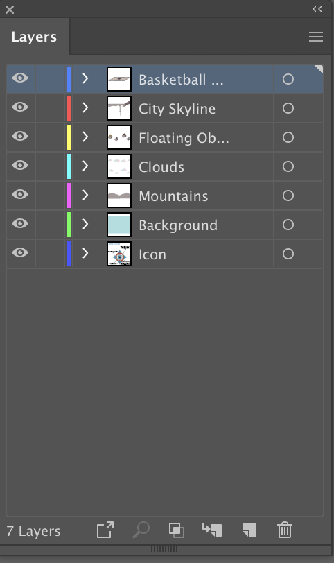

Nico's World
Illustration
The purpose of this assignment is to open up our creativity to make a world of our own, mostly using the pen tool. In addition to this, basic shapes were used, along with a “logo” that had to be created.
I made this drawing by first thinking about what I imagine in my world. The bottom of the floating basketball court is the skyline of Toronto because that is where I am from. On the small floating rocks are things I enjoy doing.

